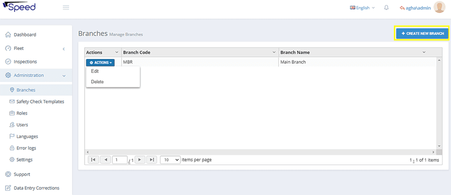
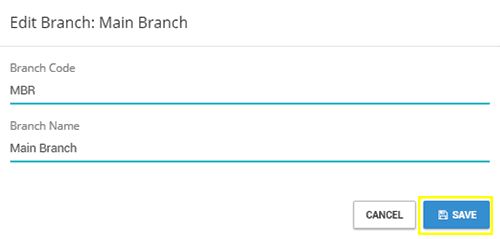

Branches
If you have more than one branch operations, this module is for you. “+CREATE NEW BRANCH” tab allows you to add as many branches you need. It will help you to keep all the data in access, unified, and easily available. So, manage all your branches with a single click.

